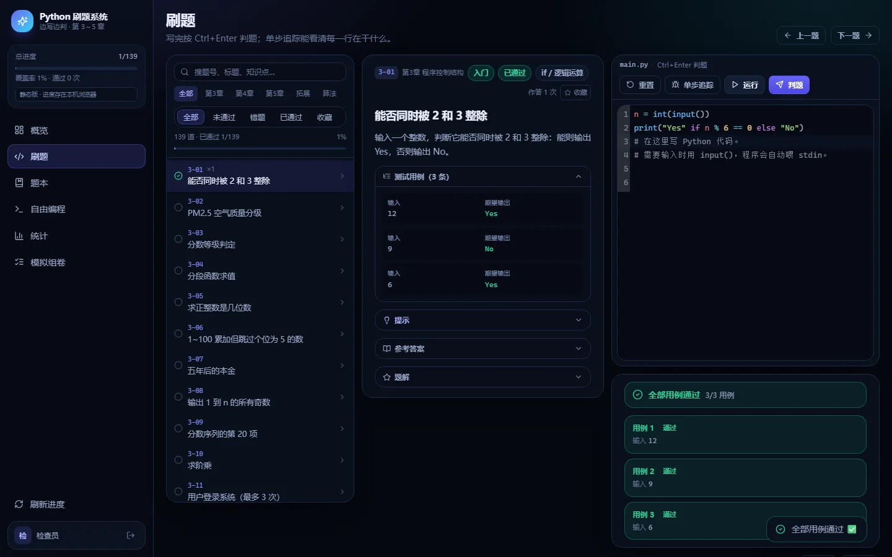

边写边判
按 F5 用题目自带用例逐条跑：期望输出、实际输出、首个不一致的行一起给出；6 秒超时看门狗，死循环不会卡住界面。
教材实验题 · 第 3～5 章 · MIT 开源
把《Python 程序设计实验指导与习题解答》第 3～5 章的实验题做成一套可以边写边判的刷题系统： 用题目自带的测试用例逐条比输出，通过的自动记分，没通过的进错题本； 卡住时还能把代码逐行回放，看清循环跑到第几轮、变量变成了什么。
在线版没有后端：题库内置在页面里，判题用 Pyodide 在浏览器里跑真正的 CPython， 首次判题需要下载约 10 MB 运行时；桌面版用 tkinter 写的，免安装、不联网也能用。

为什么做这个
判题只会说「输出不对」，但初学者真正卡住的是「为什么不对」。
于是这套系统的目标不是多给几道题，而是把「哪一行、第几轮、变量是多少」直接摊在屏幕上： 判题结果逐用例展开、首个不一致的行标出来；单步执行把整段代码走过一遍再回放。 题库按教材章节组织，参考答案里连教材示范代码本身的问题也一并写清。
核心能力
桌面版、浏览器版、手机浏览器共用同一套题库与判题规则，进度各自保存在本地。
按 F5 用题目自带用例逐条跑：期望输出、实际输出、首个不一致的行一起给出；6 秒超时看门狗，死循环不会卡住界面。
用 sys.settrace 把代码逐行走一遍并录下来：当前行高亮、变量快照随步更新、已输出内容同步累积，可拖动时间轴回放。
没通过的题自动进错题本，通过后自动移出；题目可单独收藏。题本支持一键跳题、重新提交，并能导出成绩 CSV。
覆盖率环形图、章节与难度掌握度、7 天提交趋势、提交结果分布，加一张近半年的学习热力图：连续打卡、活跃天数一眼看到。
选题量、章节、难度和限时即可开考：错题加权 / 随机 / 顺序 / 只考没做过的四种策略，交卷出得分、逐题明细与考点分布。
题库刷完了还能随手写：没有题目和用例，草稿自动保存，可以给常用代码起名存成片段，运行与单步执行和刷题页是同一套。
另外还有：关键词搜索（Ctrl+F，按题号 / 标题 / 考点 / 题干搜题）、导入自定义 JSON 题库（导入时先用参考答案跑一遍用例，对不上会告诉你是哪几题）、 视觉外观跟随系统的浅色 / 深色，以及手机上侧栏变抽屉、底部导航。
界面巡览
下面是线上版的真实截图（点大图可放大，← → 切换）。
四张统计卡、接着上次继续、章节进度与最近提交。
题库
每道题都有题目描述、方法提示、参考答案、测试用例和易错点解析。
| 章节 | 题数 | 用例 | 内容 |
|---|---|---|---|
| 第 3 章 程序控制结构 | 35 | 78 | 分支、循环、图形输出、穷举、级数近似、登录流程 |
| 第 4 章 序列 | 17 | 30 | 列表 / 元组 / 字典 / 集合、切片、嵌套结构、队列模拟 |
| 第 5 章 字符串 | 17 | 54 | 回文、切片、字典计数、字符校验、同构字符串 |
| 拓展练习 | 40 | 89 | 提成计算、杨辉三角、约瑟夫环、凯撒密码、游程编码 |
| 进阶算法 | 30 | 87 | 冒泡 / 快排、二分查找、Kadane、LIS、背包、回溯 |
| 合计 | 139 | 338 | 教材三章 + 拓展 + 入门算法 |
三种打开方式
同一个题库、同一套判题规则，按你的场景选一种。
没有后端：题库打在页面里，进度存 localStorage，判题在浏览器里跑真正的 CPython（Pyodide / WebAssembly）。
PyInstaller --onedir 打包，解压后双击 Python刷题系统.exe，约 21 MB 的目录版，不写注册表、不解压临时文件。
data\state.json，拷到 U 盘一起带走仓库里另有一份独立的 FastAPI 服务：账号注册 / 登录（PBKDF2 + JWT），每人独立的进度、收藏与代码片段，判题在独立子进程里跑。
/docs 交互文档、/healthz 健康检查docker compose up 一条命令部署cd quiz_app/backend
docker compose up -d桌面版只要 Python 3.8+ 与标准库（界面就是 tkinter）；网页前端需要 Node 20 / 22。仓库根目录的 启动网页版.bat 会把「构建前端 → 起服务 → 开浏览器」一次做完。
git clone https://github.com/telling890/python-quiz-system.git
cd python-quiz-system
python main.py # 桌面版（纯标准库 + tkinter）
python selftest.py # 题库自检：139 题 / 338 用例
cd frontend
npm install
npm run build:static # 静态版产物 frontend/dist怎么实现的
判题引擎与单步追踪在桌面版是纯 Python，在浏览器版是同一套逻辑跑在 WASM 里。
编辑器内容与题号一起发出；静态版直接在前端排队，桌面版交给本地服务或后端接口。
子进程 / Web Worker 里跑学生代码：input() 从用例取数据，print 被捕获，超时直接 kill。
忽略行尾空格、连续空格与空行；图形题保留行首空格。逐条给出期望、实际与首个不一致的行。
通过则记分、移出错题本；需要时用 sys.settrace 逐行重跑一遍，把变量与输出存成时间轴。
/legacy/api/v1，JWT、限流、异步提交bank.json
 推送即跑：题库自检（338 用例）、组卷自检、前端类型检查与构建，缺一个都不合并。
推送即跑：题库自检（338 用例）、组卷自检、前端类型检查与构建，缺一个都不合并。
项目文档
Word / PPT 原件附 PDF 导出版，GitHub 上可以直接在线预览。
15 条功能需求与追踪矩阵、分层架构与模块设计、自检与缺陷记录、21 页答辩 PPT。
打开 docs/pdf → MP4主页 → 刷题 → 判题反馈 → 单步执行 → 自由编程 → 统计 → 组卷 → 交卷报告。
播放视频 → MD完整功能说明、判题规则、目录结构、自定义题库格式、打包方法与常见问题。
读 README → MIT自由使用、修改与分发，保留版权声明即可。题库解析与用例均为自行编写。
查看 LICENSE →不用。桌面版是打包好的 exe，解压双击就能跑；在线版在浏览器里跑 WASM 版 CPython。只有做二次开发或重新打包时才需要 Python 3.8+。
桌面版默认存在程序旁边的 data\state.json，把整个文件夹拷走，进度、自定义题库和代码片段一起带走；在线版存在浏览器的 localStorage，同一浏览器同一站点长期有效，清站点数据会没。目录不可写时桌面版会自动退回 %LOCALAPPDATA%，并在统计页写明实际路径。
练习环境禁掉了 os.system、subprocess、shutil.rmtree、ctypes 等调用，单次运行 6 秒超时。桌面版的本地服务只监听 127.0.0.1，开放局域网时会启用随机口令且只接受同源 + application/json 的请求。
可以。导入一个 JSON 数组（或 {"questions": [...]}），每题最少要有 title / desc / ref / cases。导入时程序会先用参考答案跑一遍用例，对不上会告诉你是哪几题。模板见仓库 docs/题库模板.json。